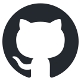

Tags Kong AI cost management reports for Claude Code: some Claude Code sends itself, the rest come from headers you add. Saved for environment “Acme Demo”.
Claude Code sends these itself; nothing to configure. Two need the hint toggle below.
Paste a fresh OIDC bearer token for Claude Opus. It is used once and not stored. Or sign in with your IdP in the browser.
Opens your IdP (PKCE → http://127.0.0.1:53180/callback). Or paste a bearer token:
Not stored: OIDC tokens expire, and a stale one fails mid-session.
Options written into Claude Desktop’s configLibrary profile. Interactive OIDC never includes an API key.
Writes interactive OIDC only — Claude Desktop runs browser login.